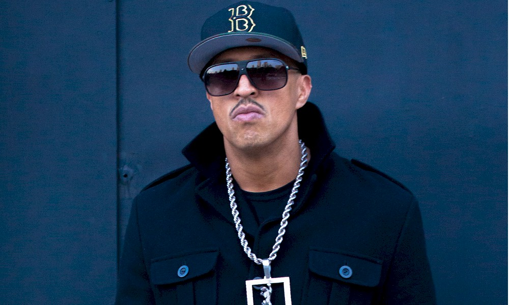

Onde você pode ver Eles falarem um pouco sobre isso:

Mano Brown
Neste vídeo você pode ver o Mano Brown no programa roda viva, falando sobre sua vida e sua música.
Roda Viva Mano Brow
Emicida
Neste vídeo você pode ver o Emicida no canal da GNT, falando sobre desigualdade racial.
Emicida no canal GNT

Sabotage
Neste filme Sabotagem ensina e aborda sobre o tema de desigualdade e o sistema carcerário precário no
brasil para os telepectadores e Atores do filme.
Sinopse do Filme
carandiru